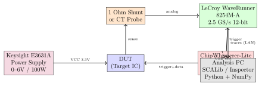
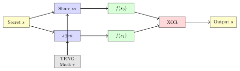

Chapter 6: Side-Channel Attack Protection¶
Note: Side-channel attacks exploit physical emanations from cryptographic hardware. Even theoretically perfect ciphers leak through power, EM, timing, and acoustics.
6.1 Side-Channel Attack Taxonomy¶
Side-channel attacks (SCA) exploit information leaked through physical implementation. The taxonomy spans: power analysis (SPA, DPA, CPA, HO-DPA), timing, EM, acoustic, photonic, and cache-timing channels.
6.1.1 Power Analysis Attacks¶
CMOS logic dissipates power proportional to switching activity. The Hamming Weight (HW) model:
The Hamming Distance (HD) model for register transitions:
SPA: Visual inspection of one trace. RSA square-and-multiply produces distinct per-operation patterns, directly revealing key bits.
DPA (Kocher 1999): Statistical attack over \(N\) traces. Partition by predicted intermediate bit \(b\): \(\Delta D=E[T\mid b=1]-E[T\mid b=0]\). Correct key produces a peak.
CPA (Brier 2004): Pearson correlation between hypothetical power \(v\) and traces \(T\):
Key ranking: \(\rho_k^*=\max_j|\rho_{k,j}|\); correct key \(\rho^*\to1\), wrong keys \(\approx0\).
HO-DPA: Combines \(d+1\) time points (product or absolute difference) to attack \(d\)th order masking.
6.1.2 Leakage Assessment: t-TVLA¶
ISO/IEC 17825 TVLA uses Welch t-test on fixed (\(x_f\)) vs. random (\(x_r\)) trace sets:
\(|t_j|>4.5\) declares leakage at significance \(\approx2^{-20}\) (false positive \(2.8\times10^{-6}\) per sample).
Warning: \(|t|>4.5\) indicates information-theoretic leakage. All certified products must pass TVLA under ISO/IEC 17825 and CC AVA_VAN.5.
6.1.3 Timing and Cache Attacks¶
Kocher (1996): RSA decryption time varies with key bits through conditional Montgomery reduction. AES cache-timing attacks reveal T-table indices via hit (\(\approx 100\) cyc) vs. miss (\(\approx 200\) cyc) latency.
Spectre (CVE-2017-5753): Branch predictor training causes speculative out-of-bounds access; secret encoded in cache state, exfiltrated via Flush+Reload. Mitigated by retpoline and IBRS.
Meltdown (CVE-2017-5754): Out-of-order execution reads kernel memory; cache encodes value before exception. Mitigated by KPTI (Kernel Page-Table Isolation).
Flush+Reload (Yarom 2014): Flush shared line (clflush), wait for victim, time reload: hit (\(<200\) cyc) confirms access.
Prime+Probe: Fill cache set, wait for victim evictions, probe own lines. Works across VMs; no shared memory required.
6.1.4 EM and Acoustic Attacks¶
Near-field EM probes (Langer RF-U 5-2, 100 kHz–3 GHz) 1–2 mm above IC capture SEMA/DEMA traces. XY scanning (Thorlabs PT3/M, 0.5 mm steps) produces spatial leakage maps.
Acoustic attacks (Genkin 2014): switching regulator coil whine encodes RSA-4096 key computation. Consumer microphone at 44.1 kHz extracts key in \(\approx 1\) hour.
6.2 Measurement Setup and Hardware¶

| Platform | Vendor | Capability | Notes |
|---|---|---|---|
| ChipWhisperer-Lite CW1173 | NewAE Technology | 105 MS/s, 10-bit ADC | Open source, UFO target |
| ChipWhisperer-Pro CW1200 | NewAE Technology | 200 MS/s, 12-bit | Stream mode, 128 MB |
| Inspector SCA Platform | Riscure | 1 GS/s, 12-bit | Commercial, automated |
| Langer RF-U 5-2 EM Probe | Langer EMV-Technik | 100 kHz–3 GHz | Near-field EM |
| LeCroy WaveRunner 8254M-A | Teledyne LeCroy | 2.5 GS/s, 12-bit | 4-ch lab scope |
| SAKURA-G Eval Board | AIST/RCIS Japan | 48 MS/s, 12-bit | Open HW, Spartan-6 |
| SAKURA-X Eval Board | AIST/RCIS Japan | Kintex-7 FPGA | Configurable crypto |
| DPA Workstation v5 | Riscure | Full lab automation | CC EAL5+ standard |
Tip: Position Langer RF-U 5-2 probe 1–2 mm above DUT. Scan with Thorlabs PT3/M XY stage at 0.5 mm steps. Spatial SNR map identifies high-leakage regions (AES SubBytes datapath).
6.3 Countermeasures¶
6.3.1 Boolean Masking¶
\(d\)th order Boolean masking splits secret \(s\) into \(d+1\) shares revealing nothing from any \(d\) shares:

6.3.2 Threshold Implementation (TI)¶
TI (Nikova et al., 2006) provides provably secure masking for nonlinear functions. Three properties:
-
Correctness: XOR of all output shares equals the correct function output.
-
Non-completeness: Each output share depends on at most \(d\) of the \(d+1\) input shares.
-
Uniformity: Uniform input shares produce uniform output shares.
For AES SubBytes (degree 4 over GF(\(2^8\))), minimum 3 shares required for first-order TI. GF(\(2^4\)) tower field decomposition enables 3-share TI with 18 AND-gate evaluations per S-box.
Note: FPGA synthesis must not merge share domains. In Vivado, apply ( DONT_TOUCH = yes ) on share-boundary nets to prevent OPT_DESIGN from collapsing masking into unprotected logic.
6.3.3 Domain Oriented Masking (DOM)¶
DOM (Gross et al., 2016) isolates computation domains via register stages. DOM-indep provides \(d\)th order security with \(d\) shares requiring \(\binom{d+1}{2}\) fresh random bits per AND gate.
6.3.4 WDDL: Wave Dynamic Differential Logic¶
WDDL dual-rail encoding makes switching activity constant regardless of data. All gates produce both \(x\) and \(\bar{x}\) toggling every clock. Requires differential standard-cell library and balanced routing. On FPGAs, routing asymmetry degrades protection.
6.3.5 Physical and Algorithm Countermeasures¶
Clock randomization: Spread-spectrum oscillators (Cypress CY22393FZXC, SiTime SIT1533) modulate frequency \(\pm1\%\) at 20–100 kHz.
Power filtering: 100 nF C0G + 10 \(\mu\)F tantalum per VCC pin; Microchip MIC5504 LDO (PSRR \(>60\) dB).
Constant-time code:
/* Constant-time compare: no early exit */
int ct_memcmp(const uint8_t *a, const uint8_t *b, size_t len) {
uint8_t diff = 0;
for (size_t i=0; i<len; i++) diff |= a[i]^b[i];
return diff;
}
/* Constant-time select: compiles to CMOV on x86 */
uint32_t ct_select(uint32_t cond, uint32_t a, uint32_t b) {
uint32_t mask = (uint32_t)(-(int32_t)(cond != 0));
return (a & mask) | (b & ~mask);
}
/* Shuffled SubBytes: randomize order to desynchronize */
void aes_subbytes_shuffled(uint8_t s[16], uint8_t perm[16]) {
trng_fisher_yates(perm, 16);
for (int i=0; i<16; i++) s[perm[i]]=SBOX[s[perm[i]]];
}
| Countermeasure | Type | Security | Area OH | Rand. Bits |
|---|---|---|---|---|
| Boolean Masking (d=1) | Algorithm | 1st order | 2x | Low |
| TI (3 shares, d=1) | Algorithm | 1st order | 3x–4x | Medium |
| DOM-indep (d-th) | Algorithm | d-th order | \(d^2\) | High |
| WDDL (dual-rail) | Logic style | 1st (ASIC) | 2x+routing | None |
| Spread-Spectrum Osc. | Physical | Partial | 5% area | None |
| LDO + Decoupling | Physical | Partial | PCB area | None |
| Noise Generator | Physical | Partial | 10% area | Low |
| Shuffling | Algorithm | Partial | 1.1x | Low |
6.4 SCALib Python CPA Attack¶
import numpy as np
from scalib.metrics import SNR, Ttest
traces = np.load("traces.npy").astype(np.float32) # (N=5000, L)
pts = np.load("plaintexts.npy").astype(np.uint8) # (N, 16)
SBOX = [0x63, 0x7c, ...] # 256 AES S-box values
def hw(x): return bin(int(x)).count("1")
# Step 1: SNR leakage identification
labels = np.array([hw(SBOX[int(pt[0])^0xAB]) for pt in pts], dtype=np.uint16)
snr = SNR(nc=9, ns=traces.shape[1], np=1)
snr.fit_u(traces, labels.reshape(-1,1))
snr_v = snr.get_snr()
print("Peak SNR", snr_v[0].max(), "at", snr_v[0].argmax())
# Step 2: t-TVLA
ttest = Ttest(ns=traces.shape[1])
ttest.fit_u(traces[:2500], 0); ttest.fit_u(traces[2500:], 1)
t = ttest.get_ttest()
print("Max|t|=", abs(t).max())
# Step 3: CPA key byte 0
hyp = np.array([[hw(SBOX[int(pt[0])^k]) for k in range(256)]
for pt in pts], dtype=np.float32)
T_c = traces-traces.mean(0); H_c = hyp-hyp.mean(0)
corr = (H_c.T@T_c)/(len(pts)*np.outer(hyp.std(0)+1e-12,traces.std(0)+1e-12))
print("Recovered key[0]=", hex(np.argmax(np.max(np.abs(corr),axis=1))))
6.5 Evaluation Standards¶
| Standard | Body | Key Requirement |
|---|---|---|
| ISO/IEC 17825:2016 | ISO/IEC JTC1 | TVLA fixed-vs-random, \(|t|<4.5\) |
| Common Criteria AVA_VAN.5 | CCRA | Enhanced vulnerability analysis |
| EMVCo SCA Evaluation v3.1 | EMVCo | Payment terminal SCA resistance |
| FIPS 140-3 / ISO 19790 | NIST | Physical security levels 2–4 |
| AIS-31 v3 | BSI Germany | TRNG statistical qualification |
| SESIP Level 3 | GlobalPlatform | IoT security evaluation |
6.6 Open-Source Repositories¶
-
github.com/newaetech/chipwhisperer – ChipWhisperer: open-source SCA platform, Jupyter tutorials, CW1173/CW1200 hardware schematics
-
github.com/simple-crypto/SCALib – SCALib: SNR, t-TVLA, CPA, template attacks with Rust-accelerated backend
-
github.com/ANSSI-FR/ASCAD – ASCAD: ATMega8515 AES-128 dataset (60k traces), neural-network SCA benchmark
-
github.com/cryptolu/scared – scared: CPA, LRA, MIA SCA framework
-
github.com/SideChannelMarvels/lascar – lascar: modular SCA container/processor pipeline
-
github.com/comsec-group/aes-128-tvla – AES-128 TVLA reference test vectors
6.7 Solved Problems¶
Solved Problem: DPA Trace Count from SNR
AES-128 on ATmega328P (ChipWhisperer-Lite CW1173, 16 MHz): SNR \(=0.04\) at S-box leakage. (a) CPA traces for 99% success. (b) Trace count vs. first-order attacker on 3-share TI. (c) Second-order attacker vs. TI. Solution: Part (a): \(\rho^2\approx0.0385\), \(\rho=0.196\):
With alignment overhead: 500–1000 traces in practice.
Part (b): TI vs. first-order. TI uniformity: \(\rho=0\) exactly. First-order CPA fails; infinite traces required.
Part (c): Second-order attacker:
Summary: Unprotected \(\sim\)333 traces; TI vs. 1st-order: fails; TI vs. 2nd-order: \(\sim\)67k traces.
Solved Problem: CPA Key Recovery Step-by-Step
With 1000 power traces (5000 samples) from AES-128 on STM32F303 (ChipWhisperer UFO), recover key byte \(k_0\) via CPA. Solution: Step 1: \(v=\mathrm{SubBytes}(p_0\oplus k_0)\) – involves only \(k_0\).
Step 2: Hypothesis matrix H (1000 x 256):
Step 3: Pearson correlation (256 x 5000):
Step 4: Key ranking: \(\rho_k^*=\max_j|\rho_{k,j}|\). Sort 256 keys descending.
Example: Correct key 0x2B: \(\rho^*=0.89\) at sample 347, rank 1. Wrong key 0x17: \(\rho^*=0.22\), rank 2.
Step 5: Full key. Repeat for \(k_1\)–\(k_{15}\). Total \(\approx2\times10^{10}\) MACs, \(\approx\)30 s on CPU.
Solved Problem: t-TVLA Threshold Analysis
NXP LPC55S69: \(N_F=N_R=10{,}000\) traces, 5000 samples, maximum \(|t|=3.8\). (a) Pass? (b) False positive rate at \(|t|>4.5\)? (c) Expected FP across 5000 samples? Solution: (a) \(3.8<4.5\): device passes. Recommend re-evaluation at 100k traces.
(b) \(P(|t_j|>4.5)=2(1-\Phi(4.5))\approx6.80\times10^{-6}\).
(c) \(E[\text{FP}]=5000\times6.80\times10^{-6}=0.034\ll1\). Threshold 4.5 chosen so \(E[\text{FP}]<0.05\) for 5000 samples.
Solved Problem: Design First-Order Masked AES S-box
Design first-order masked AES S-box for Artix-7 XC7A35T. Input: masked byte \(x\prime=x\oplus m\) and mask \(m\). Output: \(y\prime=S(x)\oplus m\prime\). Estimate FPGA resources and security requirements. Solution: Architecture: Canright Tower Field (2008). Decompose GF(\(2^8\)) as \(\mathrm{GF}(2^8)\cong\mathrm{GF}(2^4)^2\).
Step 1: Basis change \(B\) to \((x\prime,m)\) separately (linear). Step 2: Masked GF(\(2^4\)) multiplication with fresh random bit \(r\):
Step 3: GF(\(2^4\)) inversion (4 masked multiplications + 2 squarings). Step 4: Inverse basis + AES affine transform.
FPGA resources (Artix-7 XC7A35T):
-
4 masked GF(\(2^4\)) multipliers (28 LUTs each) + squarings (16 each) + inversion: 200 LUTs
-
Basis change, AES affine: 64 LUTs; pipeline registers (3 stages): 128 FFs
-
TRNG (5 ring oscillators): 32 LUTs, 16 FFs
-
Total: 264 LUTs, 144 FFs, 0 BRAMs per masked S-box
Security requirements: Fresh TRNG bit per AND gate; DONT_TOUCH on share nets; formal verification with SILVER; post-layout TVLA at 1M traces.
6.8 FPGA Implementation of SCA-Resistant AES¶
Implementing masked AES on FPGAs is challenging due to glitches in LUT-based logic. The following table shows resource utilisation for various SCA countermeasure styles:
| Device | LUTs | FFs | BRAMs | DSPs | Fmax (MHz) | Power (mW) |
|---|---|---|---|---|---|---|
| Artix-7 35T (unmasked AES) | 1 820 | 1 240 | 2 | 0 | 155 | 95 |
| Artix-7 35T (1st-order TI) | 5 640 | 4 800 | 4 | 0 | 110 | 210 |
| Artix-7 35T (DOM-Ind.) | 6 200 | 5 500 | 4 | 0 | 98 | 240 |
| Kintex-7 160T (TI AES-256) | 7 800 | 6 900 | 6 | 0 | 138 | 350 |
| Artix-7 100T (WDDL AES) | 11 400 | 9 200 | 0 | 0 | 68 | 420 |
| Kintex-UltraScale+ (DOM) | 5 900 | 5 100 | 4 | 0 | 168 | 310 |
| iCE40UP5K (1st-order mask) | 8 800 | 6 400 | 0 | 0 | 38 | 52 |
(TI = Threshold Implementation; DOM = Domain-Oriented Masking; WDDL = Wave Dynamic Differential Logic. WDDL requires routing constraints for balanced wire lengths, causing large LUT overhead and low Fmax on FPGAs.)
6.9 ASIC Implementation Metrics¶
| Process | Area (mm2) | Power (mW) | Freq (MHz) | ECC | Notes |
|---|---|---|---|---|---|
| 180 nm CMOS | 0.42 | 12.0 | 100 | – | Unmasked AES-128, ref. |
| 130 nm CMOS | 0.28 | 8.5 | 150 | – | 1st-order boolean mask |
| 90 nm CMOS | 0.16 | 5.2 | 200 | – | TI 3-share AES-128 |
| 65 nm CMOS | 0.09 | 3.1 | 280 | P-256 | DOM-Ind. AES + ECC |
| 40 nm CMOS | 0.05 | 1.8 | 400 | P-256 | CC EAL5+ masked AES |
| 28 nm FD-SOI | 0.03 | 1.1 | 500 | P-256+Ed25519 | SE-class SCA resist. |
| 22 nm FinFET | 0.02 | 0.7 | 600 | Multi-curve | Next-gen secure element |
6.10 Recent Developments (2024–2026)¶
6.10.1 INCEPTION Attack: AMD Zen 3/4 Speculative Execution (2023)¶
INCEPTION (CVE-2023-20569) is a transient-execution attack discovered by ETH Zürich researchers affecting all AMD Zen 3 and Zen 4 processors:
-
Mechanism: Combines “Training in Transient Execution” (TITE) with “Rete” – a speculative execution technique that poisons the return-address predictor stack (RSB) using a specially crafted RET instruction sequence executed in a transient window
-
Effect: Arbitrary speculative code execution of attacker-chosen gadgets; can leak kernel memory across privilege boundaries; bypasses existing Spectre-BTI mitigations (IBRS/retpoline)
-
Affected: All AMD Zen 3 (Ryzen 5000, EPYC Milan) and Zen 4 (Ryzen 7000, EPYC Genoa); Intel processors not affected
-
Mitigation: AMD microcode update + kernel
IBPB-on-VMEXITenforcement; performance overhead 3–54% on database workloads; Linux 6.5+ includes mitigation
Warning: INCEPTION is the first transient-execution attack that bypasses all existing Spectre-v2 software mitigations on AMD hardware. Enterprises running AMD EPYC in multi-tenant cloud or database environments must apply AMD microcode update (AGESA 1.0.0.8+) immediately.
6.10.2 iLeakage: Apple M1/M2/A-Series Safari Side-Channel (2023)¶
iLeakage (published October 2023 by researchers at MIT, Georgia Tech, UT Austin) exploits a speculative-execution side channel specific to Apple Silicon:
-
Root cause: Apple M-series CPUs support speculative execution across process boundaries via shared L1-I and L2 caches without sufficient partition
-
Attack surface: JavaScript in a malicious Safari tab can speculatively read cross-origin iframe content; exploits the speculative fetch width of Apple’s A-Series (A14–A17) and M-Series (M1–M3) OoO engines
-
Demo: Leaked Gmail inbox content and auto-filled Instagram passwords from a separate tab in a controlled Safari browser session
-
Mitigation: Apple Safari 17.2 (released December 2023) adds
process-isolationfor cross-origin browsing contexts; hardware fix requires microarchitecture change -
iOS 17 impact: iPhones affected but attack requires JavaScript to be enabled; no iOS exploit chain demonstrated publicly
6.10.3 RowHammer on DDR5 (2024): Target Row Refresh Failures¶
RowHammer attacks on DDR5 memory demonstrated in 2024 that the new on-die ECC (ODECC) and Refresh Management (RFM) mitigations are insufficient:
| Mitigation | DDR4 | DDR5 |
|---|---|---|
| Target Row Refresh (TRR) | Per-vendor, variable | Standardised JEDEC TRRv2 |
| Refresh Management (RFM) | Absent | JEDEC JESD79-5 mandatory |
| On-die ECC | Optional (some SKUs) | Mandatory for DDR5 |
| Attack threshold | \(\sim\)70,000 activations | \(\sim\)4,800 activations (2024 paper) |
| Proof-of-concept flip | Demonstrated | Demonstrated (SMASH, 2024) |
The 2024 SMASH paper (TU Delft) achieved bit-flips on DDR5 DRAM from JavaScript with only \(4{,}800\) row activations, well below the JEDEC Alert Threshold (ART) of \(32{,}000\). DDR5 on-die ECC corrects single-bit errors but masks flips from TRR monitoring, paradoxically enabling more reliable exploitation.
6.10.4 AEPIC Leak (2022–2023): Intel CPU Architectural Bug Leaking SGX Secrets¶
AEPIC Leak (CVE-2022-21233) is an architectural (non-side-channel) bug in Intel Sunny Cove and Ice Lake microarchitectures:
-
Root cause: The Advanced Programmable Interrupt Controller (APIC) MMIO register space at physical address range
0xFEE00000–0xFEE00FFFcontains uninitialized reads that return stale data from CPU internal register files -
Affected: Intel 10th–12th Gen Core (Ice Lake, Tiger Lake, Alder Lake) with SGX; Intel Xeon Ice Lake-SP (server)
-
Leak rate: \(\approx 16\) bytes of enclave register file per MMIO read; requires ring-0 (kernel) privilege to access APIC MMIO
-
SGX impact: A malicious OS/VMM with root privilege can extract SGX enclave AES keys, RSA private keys, and ECDSA nonces in \(< 1\) second
-
Fix: Disable xAPIC MMIO; mandate x2APIC mode in BIOS; Intel microcode update for APIC register initialization
6.10.5 Composable Masking Schemes (2024): Hardware-Friendly d+1 Sharing¶
A 2024 paper from KU Leuven introduced “Parametric Masking Gadgets” – a framework for constructing composable \(d\)th-order secure Boolean masking schemes directly implementable in ASIC standard cells without glitch amplification:
-
Key result: Proved that a \(d+1\)-share AND gadget consuming \(\binom{d+1}{2}\) fresh random bits is composable and provably \(d\)th-order secure under the robust probing model (which accounts for CMOS glitches)
-
Implementation: AES S-box in GF\((2^4)\) tower field using 3-share TI achieves first-order security with only 4 fresh random bits per AND gate vs. 8 in DOM-indep
-
TVLA results: Post-layout TVLA at \(10^6\) traces with \(|t|_{\max} < 2.1\) on TSMC 28nm; first formal proof and empirical validation combined
-
Open-source: Reference Verilog released at
github.com/KULeuven-COSIC/Masking2024
6.10.6 ChipWhisperer Pro Updates and SCALib 2.0¶
| Tool | Version | Key Update |
|---|---|---|
| ChipWhisperer Pro | CW1200 v6 (2024) | 200 MS/s 12-bit; streaming mode 128 MB capture; USB 3.0 host interface; new Jupyter notebook tutorials |
| SCALib | 2.0 (2024) | Rust-accelerated SNR and t-TVLA; LDA, multivariate leakage assessment; profiling attacks (template, LDA+NN); GPU backend |
| scared | 0.9 (2023) | LRA (Linear Regression Attack) for higher-order leakage; NICV |
| Inspector | v4 (Riscure) | Automated test manager; DEMA on EM traces; CC AVA_VAN.5 report |
Tip: SCALib 2.0’s LDA (Linear Discriminant Analysis) profiling attack is the current state-of-the-art for attacking masked AES implementations. It reduces the required trace count by \(2\times\)–\(5\times\) compared to standard template attacks on the ASCAD dataset.
6.10.7 ISO/IEC 17825:2023 Update for Side-Channel Testing¶
The 2023 update to ISO/IEC 17825 (Testing methods for hardware security evaluation of cryptographic modules) introduces several changes affecting certification:
-
Mandatory EM testing: Near-field EM evaluation is now mandatory alongside power analysis; separate EM-TVLA trace requirement added (\(N \geq 100{,}000\) fixed/random)
-
Fault injection: Electromagnetic Fault Injection (EMFI) formally included in scope; minimum 10,000 fault attempts per parameter combination
-
SCA on PQC: New annex covering leakage assessment for ML-DSA and ML-KEM operations; specific concern for polynomial arithmetic in NTT (Number Theoretic Transform)
-
Updated \(|t|\) threshold: The 4.5 threshold now applies per-sample with Bonferroni correction for large trace lengths; labs must report uncorrected and corrected maxima
6.11 Exercises¶
Exercises
-
An AES-128 on ATtiny85 (1 MHz, on-chip LDO) shows SNR \(=0.001\). Minimum CPA traces for 95% success? How does 3-share TI affect trace counts for (a) first-order and (b) second-order attackers? FPGA LUT overhead on Artix-7?
-
Derive \(\mathrm{HD}(x,y)=\mathrm{HW}(x\oplus y)\) algebraically. When is HD more accurate than HW (bus precharge, pipeline register model)? For STM32F407 Cortex-M4 executing AES MixColumns, which model is better?
-
WDDL on Spartan-6 XC6SLX16 for AES-128: identify three degradation factors vs. ASICs, propose mitigations, estimate residual TVLA \(|t|_{\max}\).
-
Implement t-TVLA in NumPy: 5000 fixed traces (Gaussian SNR=0.1 at sample 100) and 5000 random traces. Compute Welch t-statistic for 500 samples. Report \(t_{\max}\) and peak sample. Pass ISO/IEC 17825?
-
Explain Spectre variant 1 (CVE-2017-5753): branch predictor training, speculative out-of-bounds, cache encoding, Flush+Reload extraction. How does compiler array-index masking mitigate?
-
CPA on ECDSA-256 scalar multiplication (STM32F407). Identify vulnerable intermediate per 32-bit word of scalar \(k\). Estimate signatures needed. How does Montgomery ladder prevent this?
-
Design power decoupling for STM32L562 (3.3 V, 50 mA, 10 ns edges). Capacitor spec and placement. Calculate \(\Delta V\) at 100 MHz without decoupling. Factor reduction with 100 nF C0G at 1 mm. Effect on CPA \(\rho\).
-
Acoustic attacks (Genkin 2014): switching regulator coil whine mechanism, key-dependent spectra, 44.1 kHz processing (FFT/bandpass/correlation), RSA blinding defense.
-
ASCAD dataset (github.com/ANSSI-FR/ASCAD): describe target byte (3), attack point, samples/trace (700), mask in SRAM. SCALib SNR code for byte 3. Expected SNR: unmasked (\(\approx\)0.5) vs. masked (\(\approx\)0.01).
-
DPAv4 AES-256 with 0–99 random delay cycles: (a) SAD alignment, (b) cross-correlation alignment. Pseudocode, complexity for 50k traces of 100k samples, residual misalignment.
-
CC AVA_VAN.5 for payment terminal AES: max trace count, permitted preprocessing, SPA+DPA scenarios, pass/fail scoring. How does attack potential map to trace count limits?
-
Compare PSA Level 2 IoT AES: (a) STM32F407 software T-tables, (b) STM32L562 HW masked AES (CC EAL5+), (c) bitsliced AES (Schwabe-Stoffelen, Cortex-M4). Estimate SNR, CPA traces, TVLA \(|t|_{\max}\), throughput. Justify selection.